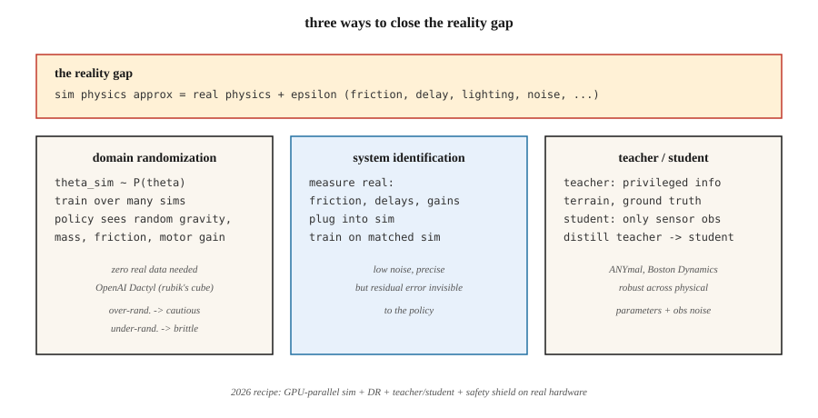

Sim-to-Real Transfer
A policy trained in a simulator that fails on hardware is a policy that memorized the simulator. Domain randomization, domain adaptation, and system identification are the three tools to make learned controllers cross the reality gap.
- Type
- Learn
- Languages
- Python
- Prerequisites
- Phase 9 · 08 (PPO), Phase 2 · 10 (Bias/Variance)
- Time
- ~45 minutes
#The Problem
Training a real robot is slow, dangerous, and expensive. A biped takes millions of training episodes to learn to walk; a real biped that falls over even once breaks hardware. Simulation gives you unlimited resets, deterministic reproducibility, parallel environments, and no physical damage.
But simulators are wrong. Bearings have more friction than MuJoCo models. Cameras have lens distortion the simulator does not include. Motors have delays, backlash, and saturation that 99% of sim models skip. Wind, dust, and variable lighting sabotage a policy trained on sterile rendering. The reality gap — systematic difference between sim distribution and real distribution — is the central problem of deployed RL for robotics.
You need a policy that is robust to sim-to-real distribution shift. Three historical approaches: randomize the simulator (domain randomization), adapt the policy with a little real data (domain adaptation / fine-tuning), or identify the real system's parameters and match them (system identification). In 2026 the dominant recipe combines all three with massive parallel simulation (Isaac Sim, Isaac Lab, Mujoco MJX on GPU).
#The Concept

Domain Randomization (DR). Tobin et al. 2017, Peng et al. 2018. During training, randomize every sim parameter that might differ on the real robot: masses, friction coefficients, motor PD gains, sensor noise, camera position, lighting, textures, contact models. The policy learns a conditional distribution over "which sim it is in today" and generalizes across the full span. If the real robot falls within the training envelope, the policy works.
- Upside: no real data needed. One recipe, many robots.
- Downside: over-randomized training produces a "universal" but overly cautious policy. Too much noise ≈ too much regularization.
System Identification (SI). Fit the simulator's parameters to real-world data before training. If you can measure arm-joint friction on the real robot, plug that into the sim. Then train a policy that expects those values. Needs access to the real system but reduces the reality gap directly.
- Upside: precise, low-noise training target.
- Downside: residual model error is invisible to the policy; small un-identified effects (e.g., motor deadband) still break deployment.
Domain Adaptation. Train in sim, fine-tune with a small amount of real data. Two flavors:
- Real2Sim2Real: learn a residual simulator
f(s, a, z) - f_sim(s, a)using real rollouts, train in the corrected sim. Closes the gap without much real data. - Observation adaptation: train a policy that maps real obs → sim-like obs via a learned feature extractor (e.g., GAN pixel-to-pixel). The controller stays in sim.
Privileged learning / teacher-student. Miki et al. 2022 (ANYmal quadruped). Train a teacher in simulation that has access to privileged information (ground truth friction, terrain height, IMU drift). Distill a student that only sees real-sensor observations. The student learns to infer privileged features from history, robust across physical parameters.
Massively parallel simulation. 2024–2026. Isaac Lab, Mujoco MJX, Brax all run thousands of parallel robots on a single GPU. PPO with 4,096 parallel humanoids collects years of experience in hours. The "reality gap" shrinks as training distribution widens; DR becomes almost free when each of those 4,096 envs has different randomized parameters.
The real-world 2026 recipe (quadruped walking example):
- Massively parallel sim with domain-randomized gravity, friction, motor gains, payload.
- Teacher policy trained with privileged info (terrain map, body velocity ground truth).
- Student policy distilled from teacher using only proprioception (leg joint encoders).
- Optional observation adaptation via autoencoder on real IMU.
- Deploy. Zero-shot on 10+ environments. If it fails, do minutes of real-world fine-tuning with safety-constrained PPO.
#Build It
This lesson's code is a tiny demonstration of domain randomization on a GridWorld with noisy transitions. We train a policy that experiences randomized slip probabilities in "sim" and evaluate on "real" with a slip level it never saw during training. The shape maps directly to MuJoCo-to-hardware transfer.
#Step 1: parameterized sim
def step(state, action, slip):
if rng.random() < slip:
action = random_perpendicular(action)
...slip is a parameter the simulator exposes. In real robotics it could be friction, mass, motor gain — anything that shifts between sim and real.
#Step 2: train with DR
At the start of each episode, sample slip ~ Uniform[0.0, 0.4]. Train PPO / Q-learning / anything. Do this for many episodes.
#Step 3: evaluate zero-shot on "real" slips
Evaluate on slip ∈ {0.0, 0.1, 0.2, 0.3, 0.5, 0.7}. The first four are within training support; 0.5 and 0.7 are outside. A DR-trained policy should stay near-optimal inside support and degrade gracefully outside. A fixed-slip-trained policy will be brittle outside its training slip.
#Step 4: compare to narrow training
Train a second policy with slip = 0.0 only. Evaluate on the same slip sweep. You should see a catastrophic drop as soon as real slip > 0.
#Pitfalls
- Too much randomization. Train on
slip ∈ [0, 0.9]and your policy is so risk-averse it never tries the optimal path. Match the expected real-world distribution, not "anything could happen." - Too little randomization. Train on a thin slice and the policy can't generalize at all. Use adaptive curriculum (Automatic Domain Randomization) that widens the distribution as the policy improves.
- Misidentified parameter space. Randomize the wrong thing (camera hue when the real gap is motor delay) and DR does not help. Profile the real robot first.
- Privileged info leakage. A teacher that uses global state for actions, not just observations, can produce a student that cannot catch up. Ensure the teacher's policy is realizable by the student given observation history.
- Sim-to-sim transfer failure. If your policy is not robust to a harder sim variant, it will not be robust to the real world either. Always test on a held-out sim variant before deploying.
- No real-world safety envelope. A policy that works in sim and "works in real" without a low-level safety shield can still break hardware. Add rate limits, torque limits, joint limits in a non-learned controller.
#Use It
The 2026 sim-to-real stack:
| Domain | Stack |
|---|---|
| Legged locomotion (ANYmal, Spot, humanoid) | Isaac Lab + DR + privileged teacher / student |
| Manipulation (dexterous hands, pick-and-place) | Isaac Lab + DR + DR-GAN for vision |
| Autonomous driving | CARLA / NVIDIA DRIVE Sim + DR + real fine-tune |
| Drone racing | RotorS / Flightmare + DR + online adaptation |
| Finger/in-hand manipulation | OpenAI Dactyl (DR at unprecedented scale) |
| Industrial arms | MuJoCo-Warp + SI + small real fine-tune |
For control at all scales, the workflow is consistent: fit the sim as best you can, randomize what you can't fit, train enormous policies, distill, deploy with a safety shield.
#Ship It
Save as outputs/skill-sim2real-planner.md:
---
name: sim2real-planner
description: Plan a sim-to-real transfer pipeline for a given robot + task, covering DR, SI, and safety.
version: 1.0.0
phase: 9
lesson: 11
tags: [rl, sim2real, robotics, domain-randomization]
---
Given a robot platform, a task, and access to real hardware time, output:
1. Reality gap inventory. Suspected sources ranked by expected impact (contact, sensing, actuation delay, vision).
2. DR parameters. Exact list, ranges, distribution. Justify each range against real measurements.
3. SI steps. Which parameters to measure; measurement method.
4. Teacher/student split. What privileged info the teacher uses; what obs the student uses.
5. Safety envelope. Low-level limits, emergency stops, backup controller.
Refuse to deploy without (a) a zero-shot sim-variant test, (b) a safety shield, (c) a rollback plan. Flag any DR range wider than 3× measured real variability as likely over-randomized.#Exercises
- Easy. Train a Q-learning agent on the fixed-slip GridWorld (slip=0.0). Evaluate on slip ∈ {0.0, 0.1, 0.3, 0.5}. Plot return vs slip.
- Medium. Train a DR Q-learning agent sampling
slip ~ Uniform[0, 0.3]. Evaluate the same sweep. How much does DR buy at slip=0.5 (out-of-distribution)? - Hard. Implement a curriculum: start with slip=0.0, widen the DR range every time the policy hits 90% of optimal. Measure total environment steps to reach slip=0.3 zero-shot vs. a fixed DR baseline.
#Key Terms
| Term | What people say | What it actually means |
|---|---|---|
| Reality gap | "Sim-to-real difference" | Distribution shift between training and deployment physics/sensing. |
| Domain randomization (DR) | "Train across random sims" | Randomize sim parameters during training so policy generalizes. |
| System identification (SI) | "Measure real and fit sim" | Estimate real physical parameters; set sim to match. |
| Domain adaptation | "Fine-tune on real data" | Small real-world fine-tune after sim training; may adapt obs or dynamics. |
| Privileged info | "Ground truth for teacher" | Information only the sim has; student must infer it from obs history. |
| Teacher/student | "Distill privileged -> observable" | Teacher trained with shortcuts; student learns to mimic without them. |
| ADR | "Automatic Domain Randomization" | Curriculum that widens DR ranges as the policy improves. |
| Real2Sim | "Close the gap with real data" | Learn a residual to make the sim mimic real rollouts. |
#Further Reading
- Tobin et al. (2017). Domain Randomization for Transferring Deep Neural Networks from Simulation to the Real World — the original DR paper (vision for robotics).
- Peng et al. (2018). Sim-to-Real Transfer of Robotic Control with Dynamics Randomization — DR for dynamics, quadruped locomotion.
- OpenAI et al. (2019). Solving Rubik's Cube with a Robot Hand — Dactyl, ADR at scale.
- Miki et al. (2022). Learning robust perceptive locomotion for quadrupedal robots in the wild — teacher-student for ANYmal.
- Makoviychuk et al. (2021). Isaac Gym: High Performance GPU Based Physics Simulation for Robot Learning — the massively parallel sim that drives 2025–2026 deployments.
- Akkaya et al. (2019). Automatic Domain Randomization — ADR curriculum method.
- Sutton & Barto (2018). Ch. 8 — Planning and Learning with Tabular Methods — the Dyna framing (use a model for planning + rollouts) that underpins modern sim-to-real pipelines.
- Zhao, Queralta & Westerlund (2020). Sim-to-Real Transfer in Deep Reinforcement Learning for Robotics: a Survey — taxonomy of sim-to-real methods with benchmark results.
Nice. That's 7 minutes of Reinforcement Learning behind you.
Continue to RL for Games — AlphaZero, MuZero, and the LLM-Reasoning Era →